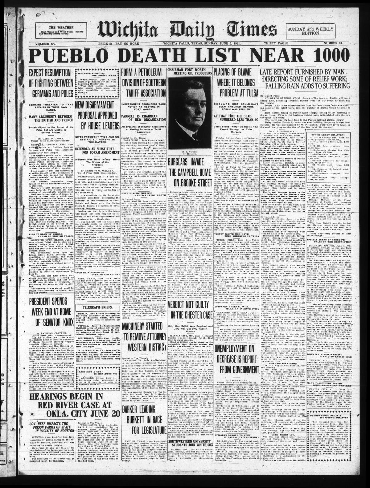
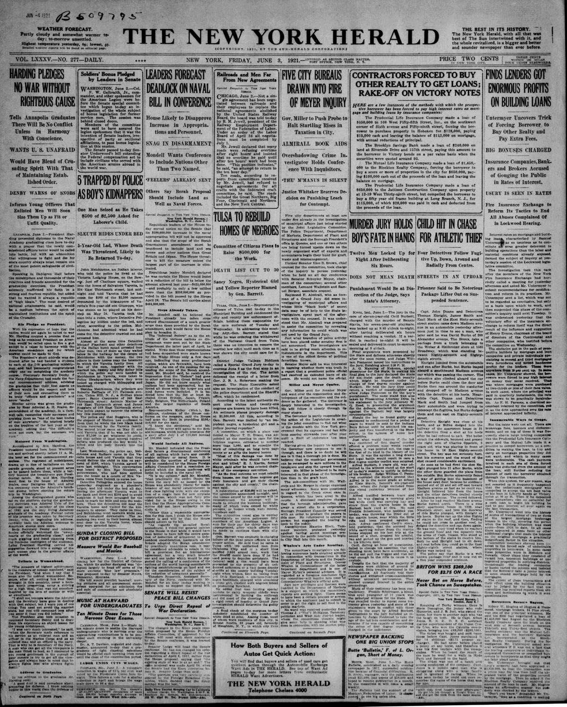
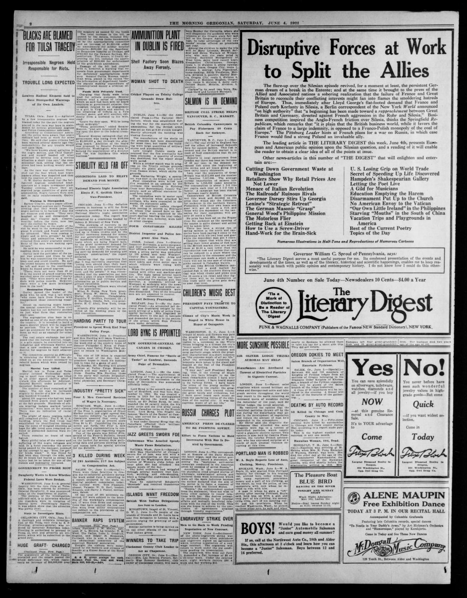
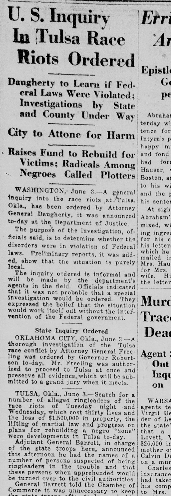
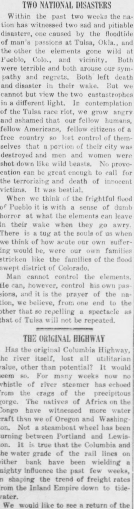
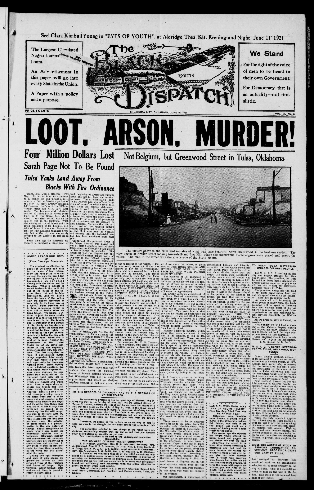
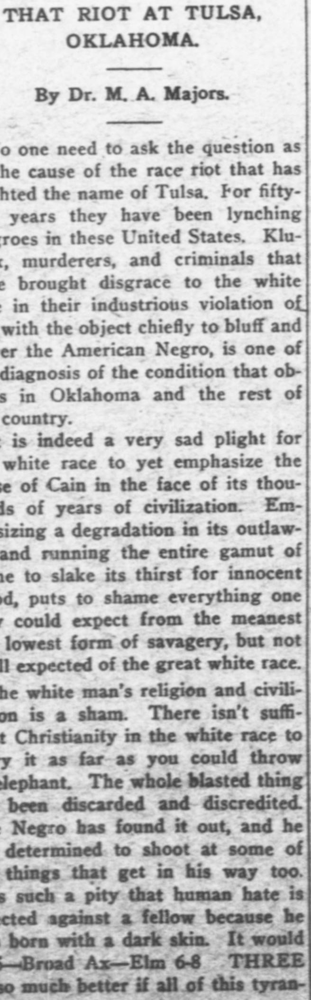
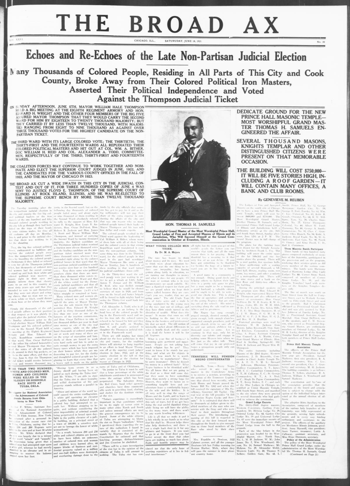

HN HN-427 · June 9, 1921 · Civil Rights & Social Change > Racial, Ethnic & Religious Justice > Lynching and racial violence
Source: Walkerton Independent, p. 2 — original page; National Park Service historical account.
Report: A reprinted dispatch dated June 3 estimated 75 to 150 dead, 84 blocks burned, and thousands of Black residents homeless, attributing the start to a confrontation over a Black youth's arrest.
Assessment: The estimates demonstrate how uncertain and politically mediated the first reports were. This is not an independently verified count, and the arrests narrative cannot justify destruction of Greenwood. Modern investigations distinguish established mass violence from uncertain individual casualty tallies.
Identity-review candidate peers: HN-426:Algorithmic
Authentic images retrieved from The Portal to Texas History (University of North Texas), Library of Congress / Chronicling America, Historic Oregon Newspapers (University of Oregon) and Gateway to Oklahoma History (Oklahoma Historical Society). Article crops are located using the archive's own OCR word coordinates and rendered at native crop resolution; article clips are assembled from the archive's own article-block images; page scans are reduced-size access renditions. No images were generated, mocked, or retouched.








Not yet acquired. Queued for provider-specific acquisition testing (see source-acquisition manifest).
URL (preserved verbatim): https://newspapers.library.in.gov/?a=d&d=WLKI19210609.1.2
Saved research report: Historical_Newspaper_Event_Research_403-427_2026-10-23.md
Evidence note: A newspaper report means a historical publication made a claim; it does not establish that claim as fact. Contemporary reporting is separated from later scholarly context and our own assessment.